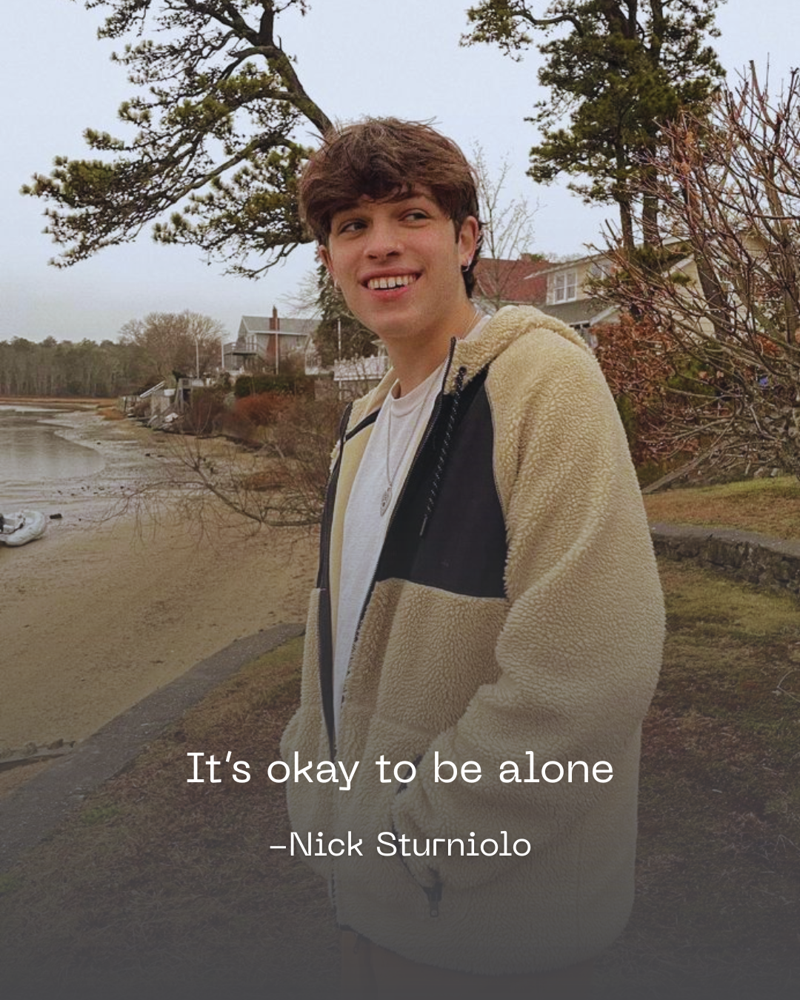
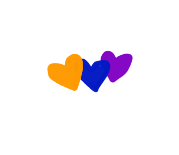

Sturniolo Triplets
Random Quotes Generator

Source:
YT
Details:
02:45


Hi! I'm Hana, a proud Sturniolo girl! 💜💙🧡
This little website comes from a place of genuine appreciation.
I've watched so many Sturniolo Triplets videos, and every time they say something, they make me laugh, brighten my day, or even save my life. I believe God sent them into my life as a gift, a mercy, and a blessing.
As someone who struggles with feeling comfortable around most men, they are one of the very few people whose presence makes me feel calm and safe.
I noticed that people usually share their funniest quotes, but it's much harder to find their meaningful quotes, especially with the original source. Many of their best words are said while they're giving advice, joking, or even yelling.
I used to save my favorite quotes in my notes so I could come back and read them whenever I needed them. When life gets hard, when I'm crying, or even doubting my existence, I always come back to those notes.
Then I thought, "Why not build something that could help other fans too?"
Since I love coding, I decided to turn that idea into this website. Every quote includes its video and timestamp—not because I'm obsessed, but because I wanted to preserve the original context and make it easy for anyone to hear the words in their own voices.
This is simply a safe little space for fans, and also a memory of the second website I've ever built and the first one I've published.
If you've read this far, thank you so much. It truly means a lot to me! 🤍
Take care of yourself, sweet soul.
And idk... maybe close your eyes and make a little prayer for Nick, Matt, and Chris. It's one of the kindest things you can do for someone: pray for them without them knowing. 🤍
This is an unofficial fan project created by a fan. It is not affiliated with or endorsed by the Sturniolo Triplets or their team.
Hi! Welcome to my website. 💜💙🧡
This is an unofficial fan-made website dedicated to the Sturniolo Triplets.
A few things to know:
Thank you so much for visiting! I hope you enjoy these quotes as much as I enjoyed collecting them.
— Hana chan 🤍